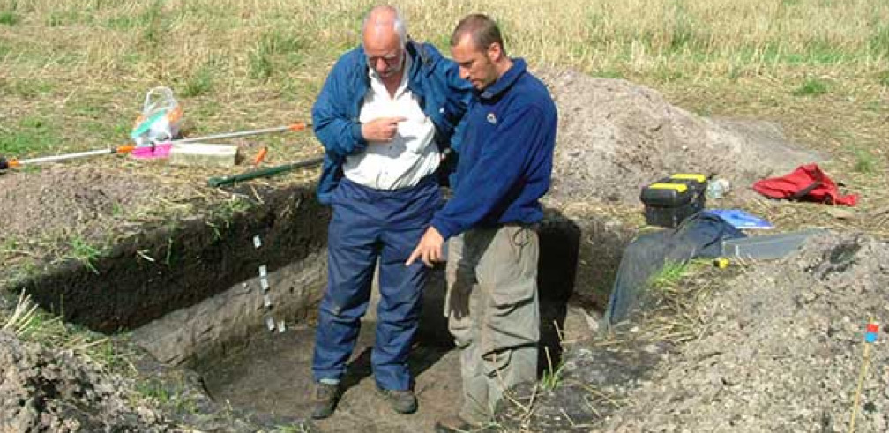

Excavation

http://www.starcarr.com/img/content-pages/about/vp05_0007.jpg
Star Carr was first uncovered by an amateur archaeologist, John Moore, in 1947. He carried out a small excavation and found ten sites around the area.
Moore then contacted Grahame Clark, a lecturer at the University of Cambridge, who then took over the excavations from 1949-1951. Moore published his findings in 1954.
Excavations were temporarily halted until the 1980s, when the Vale of Pickering Research Trust began excavating the site. The team is currently headed by Nicky Milner, Chantal Conneler, and Barry Taylor.